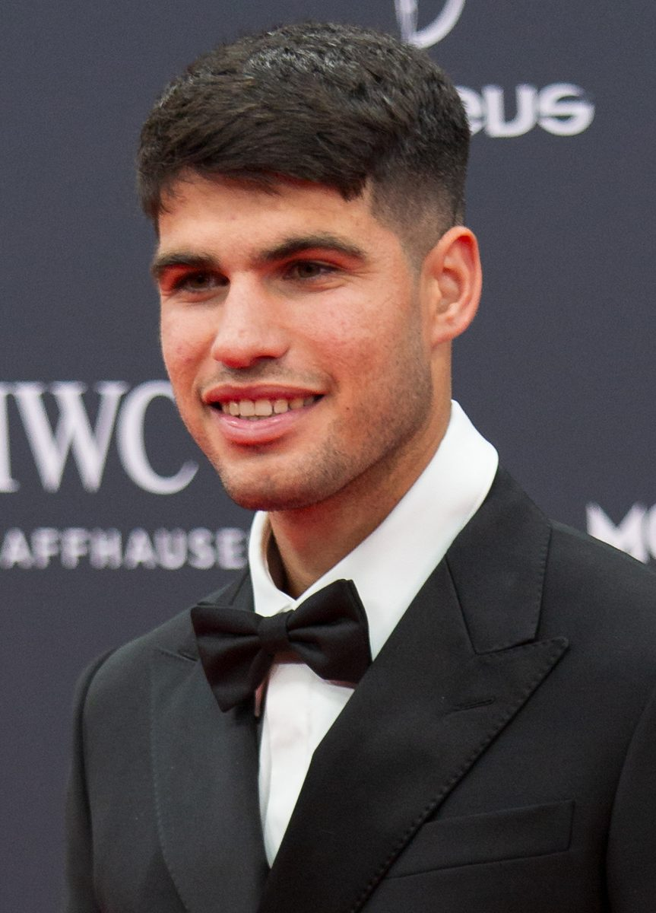

Tennis

Tennis
Carlos Alcaraz Defeats Alexander Zverev in Turin to Claim Maiden ATP Finals Title
The 23-year-old Spaniard joins Agassi, Federer and Djokovic as the fourth man to win all four Grand Slams and the year-end championship.

Tennis
Pegula Saves Match Point to Beat Noskova and Reach WTA Finals Last Four
American veteran overcomes a match point in a fluctuating contest to knock out Coco Gauff and set up a semi-final clash with Mirra Andreeva.

Tennis
Andreeva Wins 11 Games in a Row to Beat Sabalenka and Reach the WTA Finals Semi-Finals
The 19-year-old won 6-4, 6-0 in Indian Wells to top Group 2 on her debut, becoming the first Russian to advance from the group stage since Svetlana Kuznetsova in 2016.

Tennis
Linda Noskova Beats Coco Gauff to Become First Semi-Finalist at the WTA Finals
The Wimbledon champion won 6-3, 6-3 in Indian Wells for her second win in two matches on her debut at the season-ending event.

Tennis
WTA Silences Practice Court Audio After Pegula Hot-Mic Controversy
Tour chair Valerie Camillo issues apology to world No. 5 following unintended livestream of remarks about Mirra Andreeva